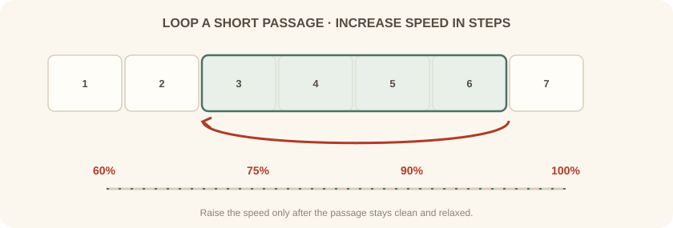
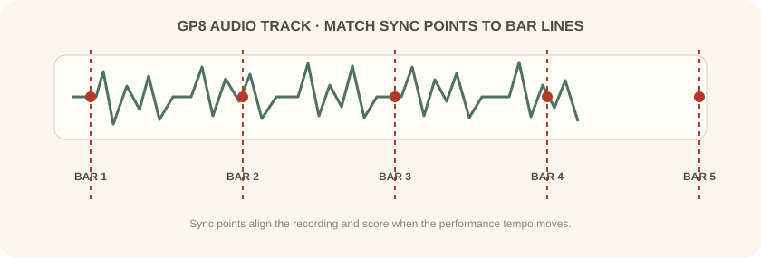

دورهٔ فرعی · Guitar Pro · جلسهٔ پنجم از شش
ابزارهای پخش را به تمرین شنیداری و تکنیکی تبدیل میکنیم: بخش کوتاه را حلقه میکنیم، سرعت را پلهپله بالا میبریم و در صورت نیاز با صدای ضبطشده همگام میشویم.
بخش اول
سرعت را با ضرب در دقیقه میسنجیم. از مترونوم برای ثابت نگه داشتن ضرب استفاده کن و اگر لازم است شمارش آغازین را روشن بگذار. هنگام پخش، مسیرها را جداگانه بیصدا یا تکنوازی کن تا ریتم و اجرای هر ساز را مستقل بشنوی.
اگر صدایی نمیشنوی، اول مسیر و سطح صدای آن را بررسی کن؛ سپس خروجی صدا و بانک صدا را در تنظیمات صوتی نرمافزار بازبینی کن.
بخش دوم
چند میزان را انتخاب کن و پخش حلقهای را روشن کن تا همان بخش پیوسته تکرار شود. با سرعتی شروع کن که بتوانی نتها را درست و رها بنوازی. پس از چند اجرای تمیز، سرعت را کمی بالا ببر؛ اگر خطا زیاد شد، یک پله به عقب برگرد.
در تمرین، هدف فقط رسیدن به سرعت نهایی نیست؛ صدای یکنواخت، زمانبندی دقیق و اجرای بیتنش را هم نگه دار.

بخش سوم
در Guitar Pro 8 میتوانی فایل صوتی را به پروژه اضافه کنی و با نقطههای همگامسازی، میزانهای پارتیتور را با موج ضبطشده جور کنی. این قابلیت برای رونویسی، تمرین همراه ضبط یا مقایسهٔ اجرای خودت با مرجع مفید است.
ابتدا ابتدای قطعه را همتراز کن، سپس نقطههای میزان را در طول فایل تنظیم کن. اگر اجرای ضبطشده نوسان سرعت دارد، چند نقطه در بخشهای مختلف بگذار و هر بار پخش را گوش کن.

بخش چهارم
یک عبارت دو میزانی را در سرعت کم حلقه کن. سه بار درست بنواز؛ سپس سرعت را ۵ تا ۱۰ درصد افزایش بده. در پایان، همان بخش را بدون حلقه با مترونوم اجرا کن.